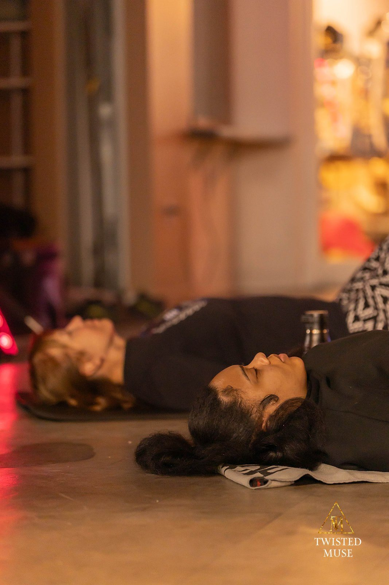
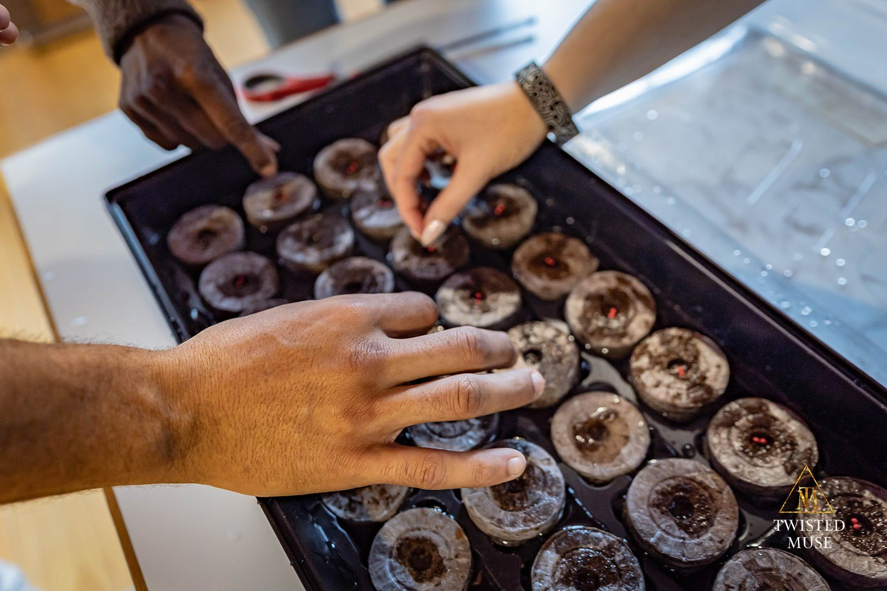

Begin where you are.
Public practice is the most open doorway into Senses Yoga School: accessible, community-rooted, and designed to support a sustainable relationship with body, breath, attention, and one another.
Yoga For Life
Our primary community practice model: yoga, breathwork, meditation, reflection, and accessible embodied education offered through community and public settings.
Heroic Breathwork
Breath-centered practice for self-awareness, resilience, nervous-system regulation, reflection, and embodied inquiry. Piloted in community settings; an eight-week series opens when a cohort is scheduled.
Nāda Yoga / MOGA · The Path of Sound
Nāda means sound, tone, or vibration. This developing pathway approaches mantra, Oṃ, voice, rhythm, music, and deep listening as contemplative practices—ways of refining attention, entering relationship, and encountering both inner and shared resonance.
Practice may move between silence and sound, individual listening and community expression, traditional source study and contemporary creative exploration.
Community & Outdoor Practice
Seasonal practice in gardens, parks, recreation programs, partner sites, and other environments where community already gathers.
Community experiences matter.
Explore first-hand reflections and the documented impact of our programs.
See how community members describe their Yoga For Life experiences, and explore what our pilot programs are learning.
Read Community VoicesExplore documented impact →Free classes, practices & reflections.
Join the Senses Yoga Patreon for free access to class archives, guided practices, breathwork, meditation, community updates, and the Founder’s Heroic Yogi Blog.
Joining is free. Paid support is always voluntary and helps sustain accessible community education.
Practice beyond the calendar
Prāṇa Circle · Mondays, 7:00–8:00 p.m. Central Time. Join the live stream free through Patreon with your email; no paid membership is required.
Join Prāṇa Circle FreeThe free Senses Yoga Patreon also holds class archives, guided practices, breathwork, meditation, community updates, and the Heroic Yogi Blog.
Explore the free practice library →


How would you like to enter the school?
Begin with a public class, deepen your studies, enter supervised service, or explore a specialized placement.
Find a Class
Public yoga, meditation, current locations, and session details.
View Calendar →02 · TrainHeroic Yogi Apprenticeship
Structured study, supervised instruction, reflection, and applied service.
Explore Training →03 · SpecializeField Placements
Ecology, Foodways, sound and arts, or specialized inquiry through approved pathways.
Explore Placements →04 · ServeCommunity Stewardship
Join volunteer and community projects without enrolling in the apprenticeship.
Volunteer →